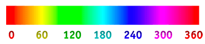

Sass offre différents modules maison (built-in) permettant de simplifier l'écriture de code CSS.
Sass fournit les modules intégrés suivants :
- Le module sass:math fournit des fonctions qui opèrent sur les nombres.
- Le module sass:string facilite la concaténation, la recherche ou le découpage de chaînes de caractères (string).
- Le module sass:color génère de nouvelles couleurs basées sur des couleurs existantes, ce qui facilite la création de thèmes de couleurs.
- Le module sass:list vous permet d'accéder à des valeurs dans des listes et de les modifier.
- Le module sass:selector permet d'accéder au puissant moteur Sass qui permet de sélectionner des éléments HTML.
- Le module sass:meta expose les détails du fonctionnement interne de Sass.
Parmi ceux-ci, le plus populaire est le module de couleurs que nous examinerons aujourd'hui.
Afin d'éviter d'affecter négativement la performance du code CSS, les modules ne sont pas importés par défaut. Il faut donc penser à les importer si l'on souhaite les utiliser.
Par exemple, afin d'importer le module de couleurs, il faut écrire:
Suite à cet import, plusieurs fonctionnalités de traitement de couleurs s'ajouteront à Sass.
Les fonctionnalités whiteness et blackness permettent d'altérer une couleur en lui ajoutant du blanc ⚪️ ou du noir ⚫️. Le résultat correspond au résultat obtenu si un galon de peinture verte était mélangé à moitié (50%) avec un galon de peinture blanche ou à moitié (50%) avec un galon de peinture noire.
Les unités doivent être exprimées en pourcentage (%) pouvant-être positif ou négatif.
La fonctionnalité hue permet de changer la teinte d'une couleur toute en gardant exactement la même saturation et la même luminosité.
Les unités données doivent-être des nombres positifs ou négatifs déplaçant la position de la teinte actuelle sur l'échelle de teintes de 0 à 360 degrés (roue chromatique).
La teinte actuelle à une valeur de 155.
En haut ⬆️, elle est incrémentée de 100, donc atteint à 255.
En bas ⬇️, elle est diminuée de 100, donc atteint 55.
La fonctionnalité saturation permet d'altérer l'intensité d'une couleur. Par exemple, en donnant une saturation de -50%, une couleur devient automatiquement 50% moins vibrante. La fonctionnalité color.grayscale quant à elle est l'équivalent d'une couleur ayant perdu toute son intensité, pour ainsi dire l'équivalent de lorsque cette couleur est imprimée en noir et blanc 🖨.
Les unités doivent être exprimées en pourcentage (%) pouvant-être positif ou négatif.
color.adjust($color, $saturation: -100%) = color.grayscale($color),
soit une couleur complètement désaturée.
La fonctionnalité lightness permet d'altérer la luminosité d'une couleur. Il est donc possible de la rendre plus lumineuse ou plus sombre via celle-ci.
Les unités doivent être exprimées en pourcentage (%) pouvant-être positif ou négatif.
La fonctionnalité color.complement permet d'obtenir la couleur complémentaire sur le cercle chromatique à la couleur passée en argument. Tandis que la fonctionnalité color.invert soustrait les valeurs de rouge, vert et bleu à 255 afin d'obtenir la couleur opposée exacte.
Certes, ces deux fonctionnalités se ressemblent beaucoup, mais il est parfois pratique d'avoir la flexibilité de choisir entre les deux.
Les fonctionnalités red, green et blue permettent d'augmenter ou de réduire le taux de rouge 🔴, vert 🟢 ou bleu 🔵 dans une couleur donnée.
Les unités données doivent-être des nombres positifs ou négatifs faisant varier le taux de rouge, vert ou bleu. Ces taux ont un minimum de 0 et un maximum de 255 qu'ils ne peuvent jamais dépasser.
La fonctionnalité alpha permet de faire fluctuer le taux de transparence d'une couleur. Pour ce faire, il faut passer un nombre entre -1 et 1 s'ajoutant à la valeur courante d'alpha.
Par exemple, si une couleur est actuellement opaque (alpha de 1), il faudra lui donner la valeur -0.5 pour diminuer son opacité de 50%.
Voici coup sur coup la même couleur verte 🟢 ($color: #00c774;) altérée via des fonctionnalités du module de couleurs Sass: